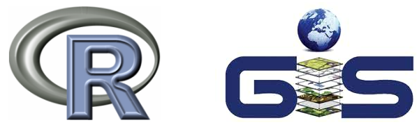
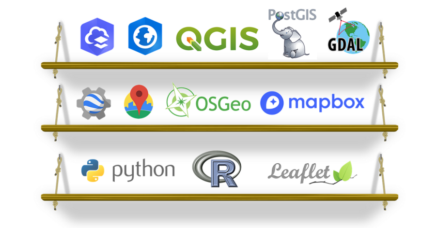
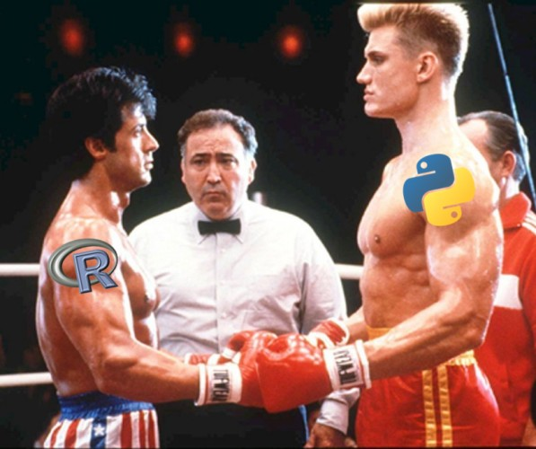
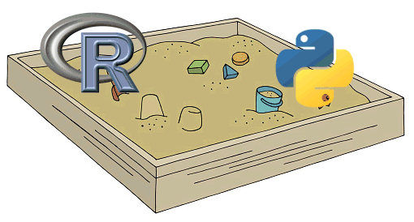

Integrating R & GIS



How to combine R with desktop GIS and cloud GIS?
R as a replacement for (some) GIS tasks
especially where data is concerned
Automating workflows
example: Preparing Reference GIS Layers for a Web
Map with R
R for Spatial Analysis
example: Forest Tools
Accessing resources with R
API clients
often come out fast and first in Open Source
R as a command and control center
R as a development platform
Spatial stats
Sharing code and data as packages
Out-of-the-box operations
new spatial and
statistic techniques
Generating new data from scratch
Reporting
Shiny apps
R ↔︎ ArcGIS
R-ArcGIS Bridge
arcgislayers
R ↔︎ QGISProcessing R Provider
plugin
R ↔︎ Cloud data and services
API
packages
httr
R and Python actually play very well together:
